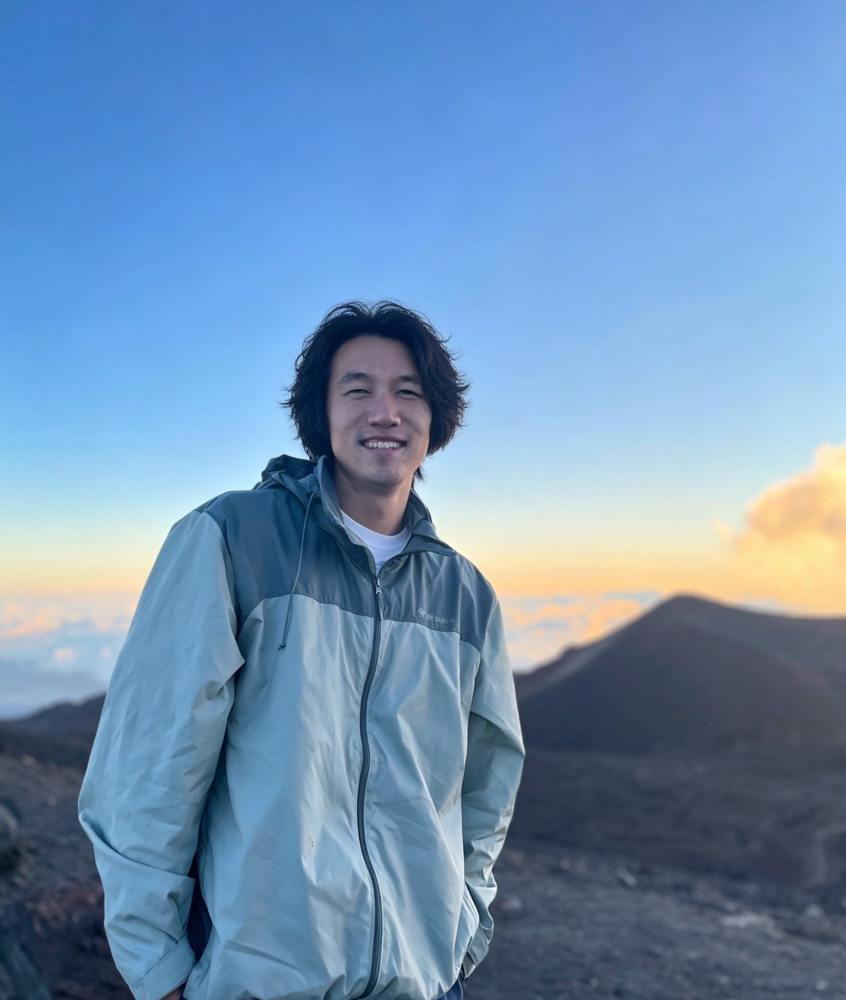
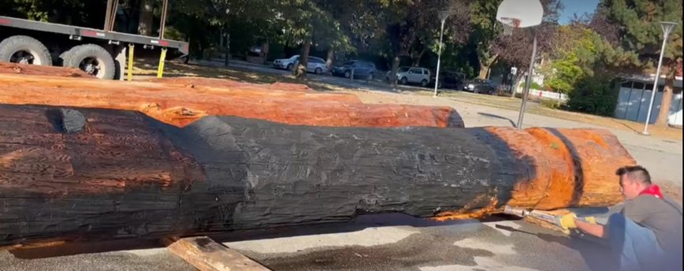
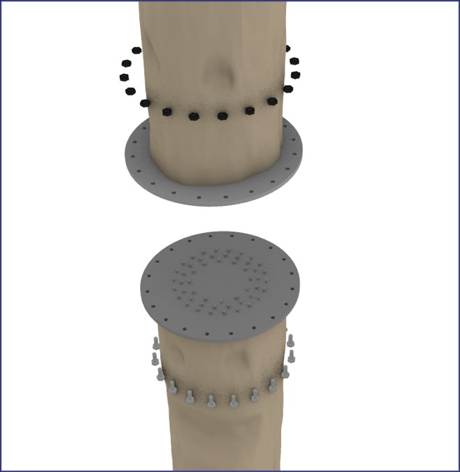
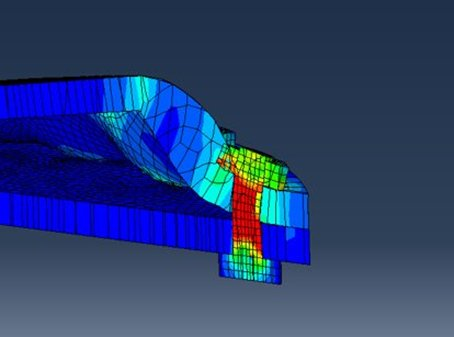
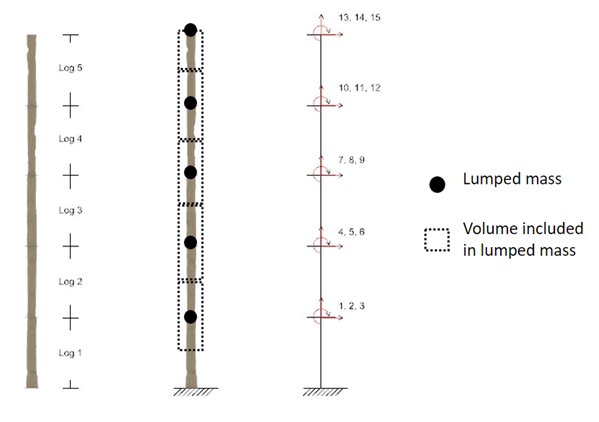
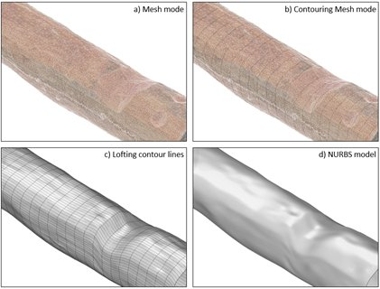
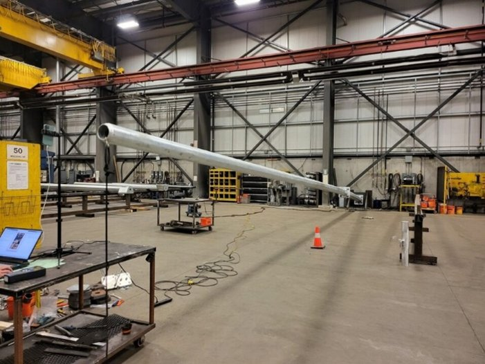
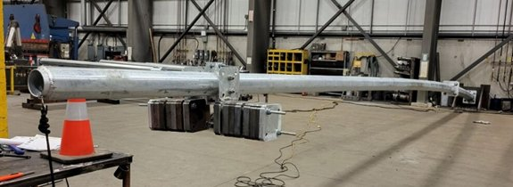
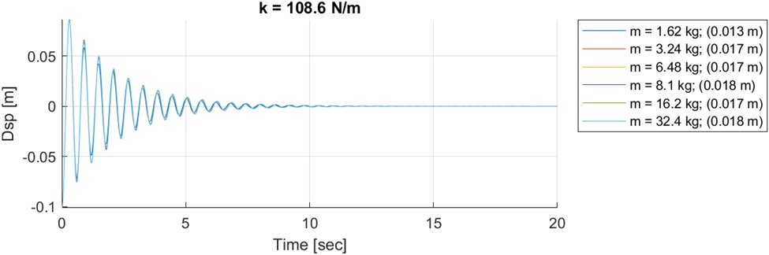
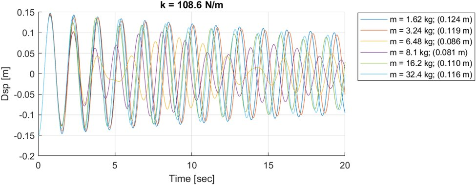

Hello, my name is Fan (William) Xie. I am a Ph.D. student in the Smart Structures Group at UBC. My academic background spans both engineering and architecture. I received my B.Eng in Civil Engineering from McMaster University in 2018, followed by a Master of Architecture from the University of Toronto. My interdisciplinary training in engineering and architecture shaped my interest in digital modeling, simulation, and the integration of physical and virtual built environments.
My current research focuses on AI-enabled digital twins, vision-based 3D reconstruction, and scan-to-analysis methods for structural and earthquake engineering. I am particularly interested in combining computer vision, photogrammetry, BIM, and AI techniques to support automated structural assessment and intelligent infrastructure analysis. The following sections highlight some of my recent research and development work.

Projects
A collaboration between the Smart Structures Group and Indigenous artists to stack five 20-foot timber logs into a 100-foot sculpture. The team developed a scan-to-model pipeline to build a digital twin of the structure and conduct response spectrum analysis. State-of-the-art connection design was used between segments, showcasing the fusion of Indigenous art and modern structural engineering.





From top-left: field specimen · connection detail · FEM analysis · structural model · photogrammetry scan pipeline (bottom)
This project investigated the dynamic vibration behavior of cantilever traffic and light poles subjected to free vibration. Experimental testing and finite element analysis were conducted to evaluate the effectiveness of vibration-mitigating dampers across different mass and stiffness combinations. Computer vision tracking was used to capture pole tip oscillations, and calibrated FE models enabled extensive parametric studies on damper performance. The study identified optimized damper configurations that significantly reduced vibration amplitudes for different pole types.




From top-left: lab test setup · damper assembly · damped free vibration response · undamped response comparison
Awards & Honors
Other Design Work